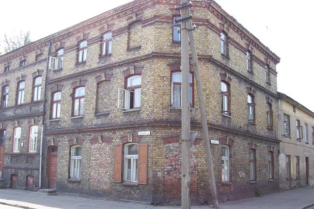
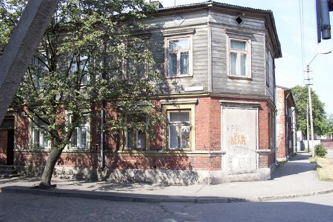
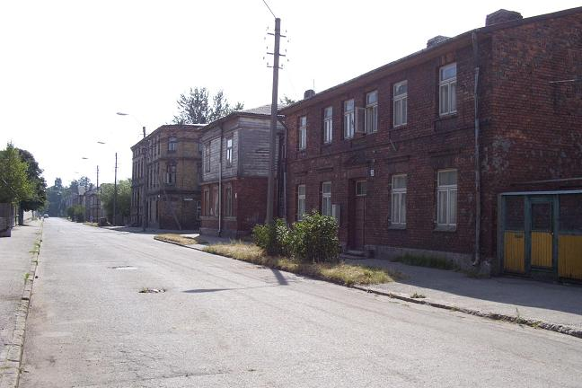
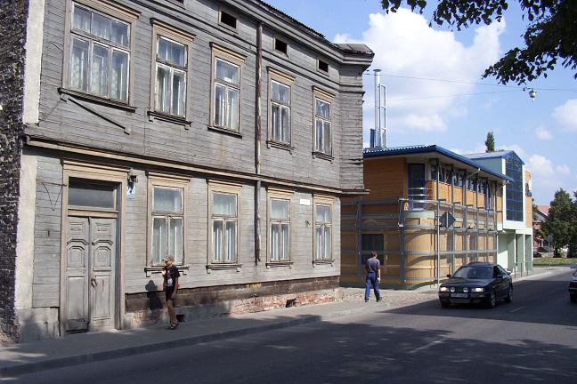
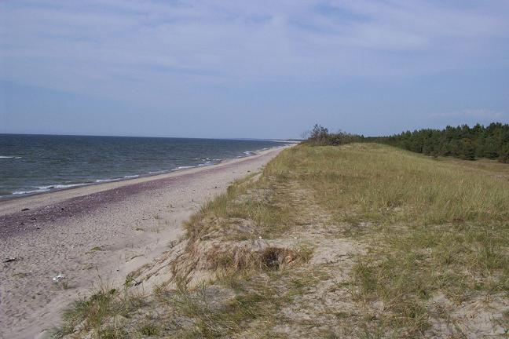
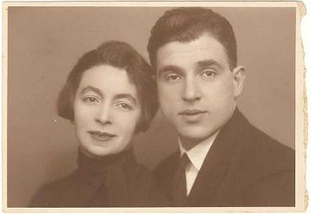
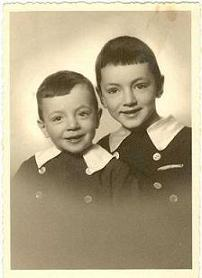

The Porzecanskis lived a couple of blocks away from Liepaja’s train station, in an industrial area that is now quite run down. The family house and bakery was located at Albertstrasse 19, now renamed Terauda iela, and it still stands there at the corner with Augustes iela. It is a three-story brick building and its corner entrance, which was for the bakery’s customers, is now closed up. As told by Aron Porzecanski, the house had an open interior patio in the back where the rustic bathrooms were located, a single water pump was situated (because there was no running water), wood for the stoves was stored and there was even a cow to provide milk for the whole family. The house included boarders but, during World War I, the family had to make room for a German lieutenant, who was in charge of a unit that was camped out across the street. A factory employing some 1,000 workers reportedly was located nearby, and it made nails, wire, shovels and other iron products from scrap. The workers were customers of the Porzecanski bakery.

The second picture shows the house across the street, a two-story building of poorer construction (brick at ground level, wood at the top), and the third picture Terauda street, with the corner (now closed) entrance to the Porzecanski home at center-left, across the street from Augustes. The properties at the extreme left, across the street from the homes, appeared to be of an industrial, rather than residential, nature.


The fourth picture is of Juras street, where Ana Braumann Porzecanski supposedly lived, in an old house that was probably located to the right of the automobile. Note the two modern buildings to the right of the picture and the old, wooden building on the left.

The fifth picture is of the beach at Skede, where Ana and her children were probably executed in mid-December 1941. Women and children were assembled in a wooden barn and in groups of twenty they were led to the dunes, where a long ditch had been dug that ran parallel to the shore. They had to undress, despite the freezing temperature, and then they were positioned along the ditch facing the sea so that their bodies would tumble into the trench as they were shot. Pictures of the shootings can be seen at
http://www.ushmm.org/research/collections/, search photos for Liepaja and see pictures #1-13. For someone else’s visit to Liepaja, including their account of Skede, see
http://www.jewishgen.org/Latvia/SIG_Shtetl_Memories.html.

Left, Ana Porzecanski and her husband, Libau 1928. Right, Ana’s children, Isak and David, Libau 1940, one year before their deaths.

Back to the Liepaja Section
Back to the trip homepage